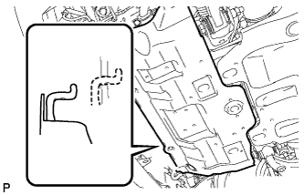

КОНТАКТНЫЙ ДАТЧИК ДАВЛЕНИЯ МАСЛА > УСТАНОВКА |
| 1. УСТАНОВИТЕ КОНТАКТНЫЙ ДАТЧИК ДАВЛЕНИЯ МОТОРНОГО МАСЛА |
Нанесите герметик на 2–3 витка резьбы контактного датчика давления масла.
С помощью удлиненной торцевой головки на 24 мм установите контактный датчик давления жидкости.
Подсоедините разъем контактного датчика давления жидкости.
| 2. ПРОВЕРЬТЕ, НЕТ ЛИ УТЕЧЕК МАСЛА |
Запустите двигатель. Убедитесь, что в узлах, в которых выполнялись работы, нет утечек масла.
| 3. ПРОВЕРЬТЕ УРОВЕНЬ МОТОРНОГО МАСЛА |
Прогрейте двигатель, затем остановите его и подождите 5 минут.
Убедитесь, что уровень масла находится между отметками низкого и максимального уровней на щупе проверки уровня масла.
Если уровень масла находится на низком уровне, убедитесь в отсутствии утечек моторного масла и долейте масло до максимальной отметки.
| 4. УСТАНОВИТЕ ЗАЩИТУ КАРТЕРА ДВИГАТЕЛЯ № 1 В СБОРЕ |
|  |
Присоедините защиту картера двигателя к кузову автомобиля, как показано на рисунке.
Вверните 4 болта.
| 5. УСТАНОВИТЕ НИЖНЮЮ НАКЛАДКУ ПЕРЕДНЕГО БАМПЕРА |
Установите нижнюю облицовку переднего бампера и закрепите ее 5 болтами и фиксатором.